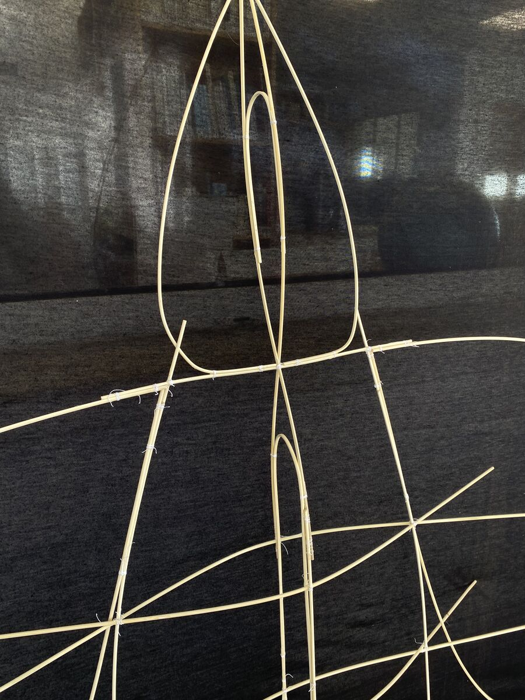
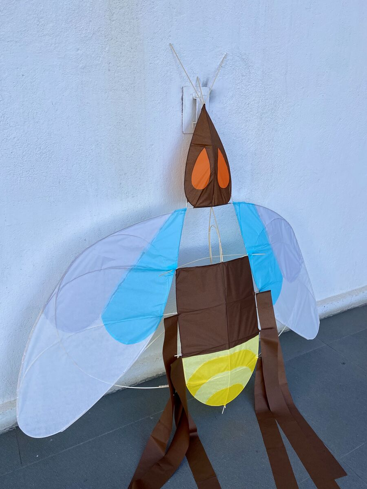
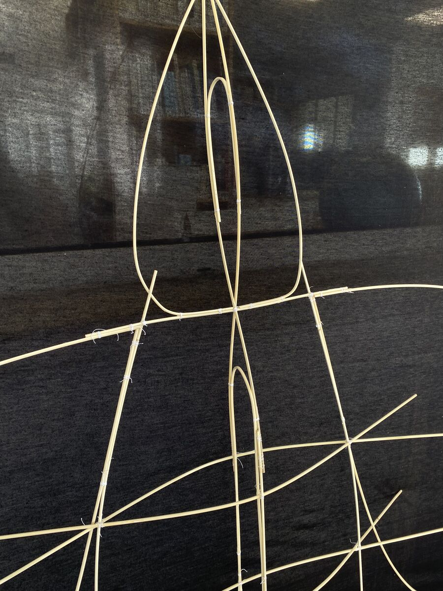
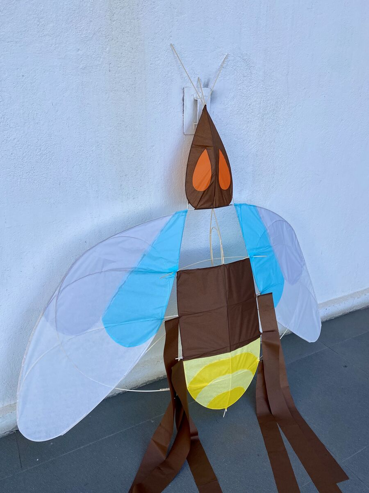

El Ascenso Sincronizado de Luz
Proyecto realizado en el Taller Topológico Multiescalar 2024. “El Ascenso Sincronizado de Luz” surge del proyecto anterior, se confecciona un cometa con forma de luciérnaga, se aprende sobre aerodinámica y cómo se comportan materiales tales como la madera de coligüe y el papel volantín. Se hizo un proceso de observación y abstracción de la luciérnaga y su vuelo para ser llevado a una estructura final que sea capaz de volar. La propuesta busca sincronizar el movimiento físico y lumínico, evocando una experiencia visual de elevación.
Ver proyecto en WikiCasiopea: Ir a la wiki
 


